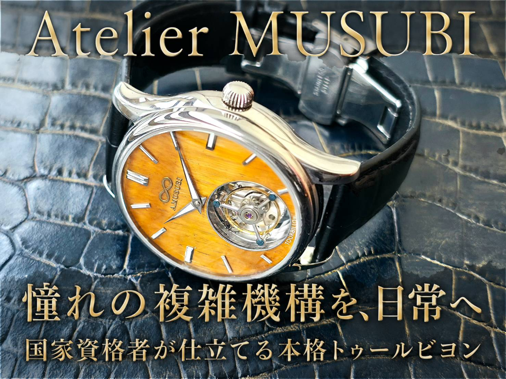
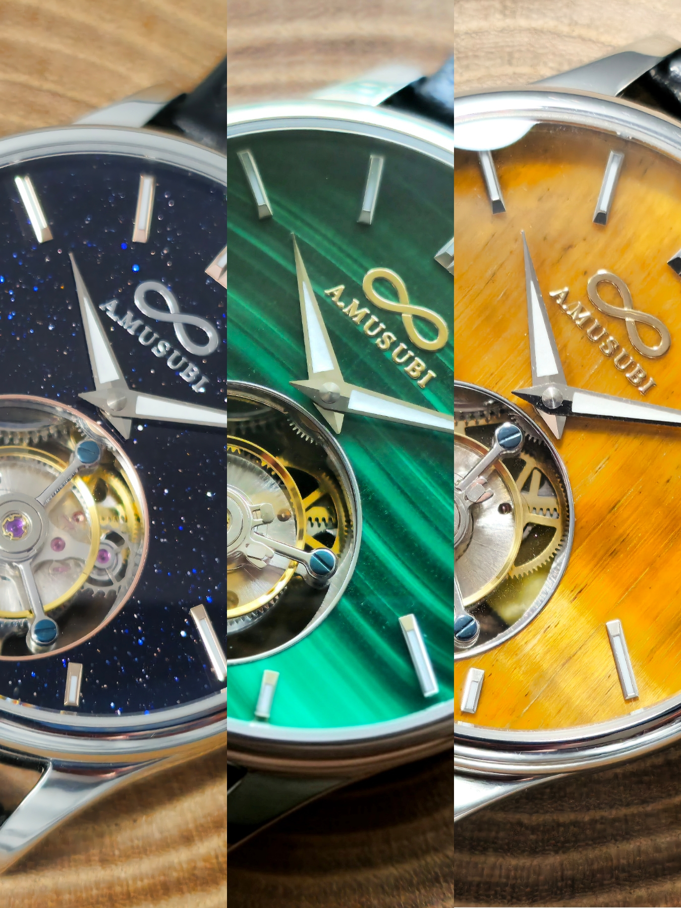
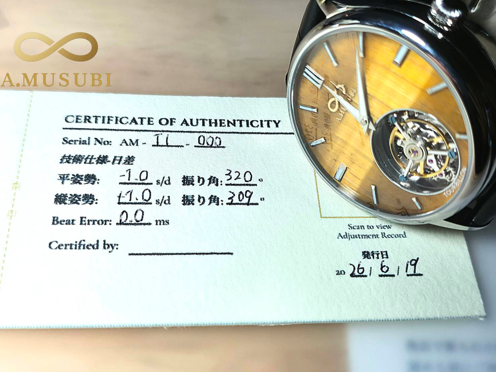
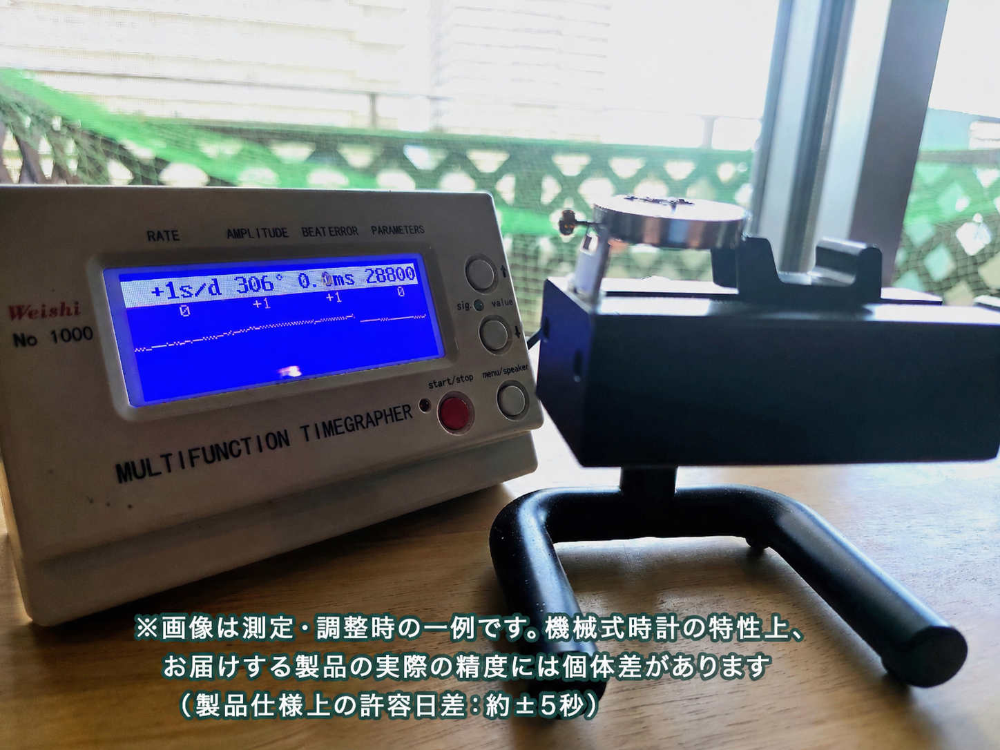
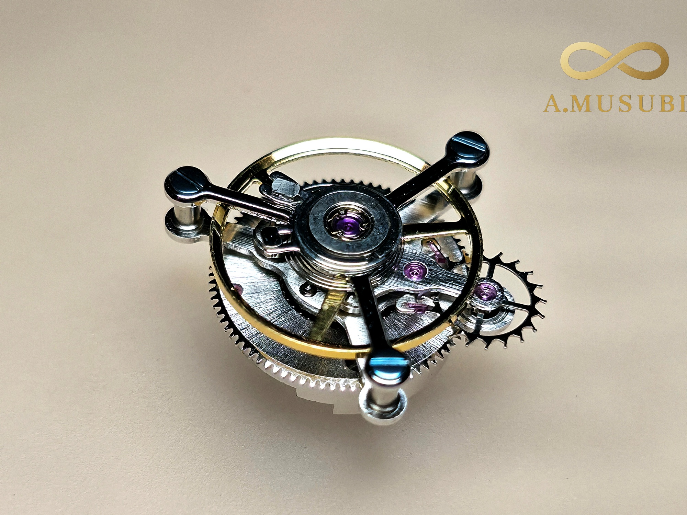

第1弾 プロジェクト
Makuake プロジェクトページへ ↗
本格手巻きフライング・トゥールビヨン『T1』
天然の輝石（マラカイト/ラピスラズリ/タイガーアイ）を用いた美しい文字盤。 中国製の優秀なトゥールビヨンムーブメントをベースに、国内で一つ一つ丁寧に全分解・再構築を行いました。個別の歩度調整カルテと、5年以内の無償オーバーホール権利をお付けした自信作です。
【Makuakeにて先行販売実施】
2026年7月11日(木) 11:00 より、最大30%OFFの超早割（限定30本）を販売開始いたします。